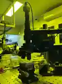
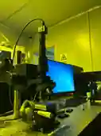
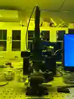
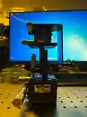
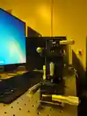
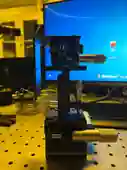

高清实拍 2026-11-08 · 图 1
电脑屏幕基本位于器件后方，A15 银色长槽板面朝镜头，右上方有向右折出的 L 板；在该视角，物理 +X 方向投影到画面左方。
相机候选：从场景 -Z 观察。屏幕作为外部参照，不改变任何部件朝向。
高清原图已在当前对话提供，但尚未公开存入此 GitHub 仓库。此处不以其他照片冒充该原图。

高清实拍 2026-11-08 · 图 2
显示器位于画面左侧，正面可读 GCM-VC13M，顶层右向测微头和底层右向测微头同时出现；底层另一根正交测微头向画面左侧伸出。
相机候选：场景 +X/+Z 斜视；与图 1 的模型相机角距约 121°（未实测标定），不是 30° 的同侧小转角。
高清原图已在当前对话提供，暂未作为公开仓库素材上传。请与当前对话中的第二张高清照片核对。

照片 191
相机、镜筒、机头及样品区整体。
V92已纠正：相机/物镜光轴不再强制穿过A18主体几何中心；主体右偏24mm候选。仍未验收：支架与机头实际接口、绝对偏置尺寸。


照片 192
侧视立柱、机头、相机线及样品台。
未验收：照明支架固定方式和镜筒连接位置。


照片 193
正面整体：物镜、样品座、两套机构。
未验收：物镜与样品的真实空间距离。


照片 194
V94新增：A17正面浅色长方形铭牌与左侧银色磁力开关已进入实体模型；Oeabt MBS-65B/C升为主候选族，但铭牌文字和被A15遮挡的顶孔仍不可读，因此不认定具体后缀。
载玻片侧整体：磁座、T25M、VC13M、G40、折弯片。
未验收：磁座型号及 A05 下端夹持器。


照片 195
VC13M 竖直台、底层双轴 T25M 与上方摆角台。
未验收：具体平移台后缀、导轨与前端螺钉孔位。


照片 196
G40M60L 右侧微分头、L形板下端并排蝶形螺钉。
未验收：两枚螺钉的真实孔距与压紧方式。
